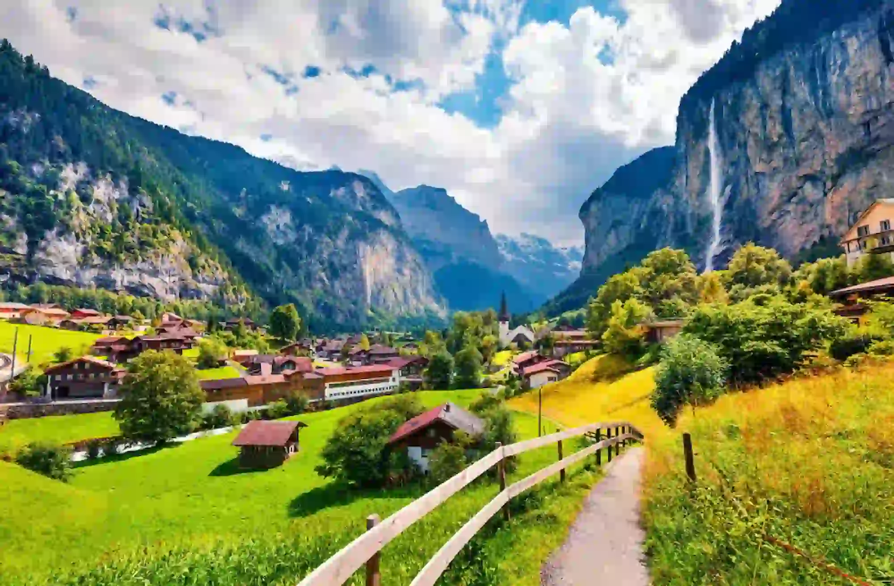

Latouche Georges Jr | WDD 130
Hello! My name is Georges Jr. Latouche, and I'm from Port-au-Prince, Haiti. I enjoy reading, gaming, studying, and self-development. Technology is my passion, and I'm fortunate to be working at a telecom company.
Hello! My name is Georges Jr. Latouche, and I'm from Port-au-Prince, Haiti. I enjoy reading, gaming, studying, and self-development. Technology is my passion, and I'm fortunate to be working at a telecom company.